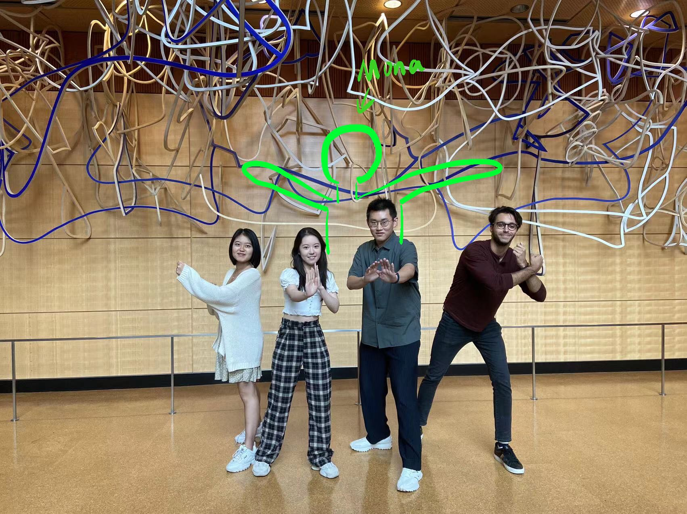

8 Team Process

Design of team contract
We designed five sections for the team contract to better understand each other and to be better corporate in the future. The design follows the team corporation concept from Professor Domagala’s lessons. Overall, we included our team purpose, team vision, norms, strengths and weaknesses, methods on how to come to agreements, and plans for future meetings.
Why did we choose Metaverse as the topic
From studying RStudio (soon to be called Posit) and team management, we decided to pick up a topic that brings a combination of themes from this class, while being inspiring for and better prepare the future Ross students. Therefore, we came up with four topics at the very beginning, including: How Web 3.0 will affect team management; Scrum; The Metaverse’s effects on business and education; Microsoft team; and Amazon cloud service. Then with professor Kumar’s suggestion and the majority vote in the group, we picked The Metaverse’s effects on business and education as the final topic.
The term ‘Metaverse’ has been a buzzword for some time now and we wanted to take this opportunity to learn more about it. The application of the Metaverse can bring endless possibilities for people in different professions: it can help them explore a brand new form of interaction for their daily working style and learning. Remote and online communication has become more popular in recent years using applications such as Zoom and Microsoft Teams. Using the Metaverse through virtual reality headsets has been suggested as the next step to improve remote collaboration. Our idea for the project is to learn about the specific benefits it can provide and effectively communicate them to our audience through our manual.
How did we understand the need of our target user
First of all, we decided as a group which user segments will benefit the most from Metaverse, and two main Metaverse scenarios we imagined were in education and business. Therefore, we narrowed the audience of this Metaverse manual to students, professors, and employees in business.
How did we come up with interview questions
After having the key user segment, we started to brainstorm what the users would want to know about the Metaverse. For example, what would students want to know about the Metaverse before using it for class? What would employees want to know about metaverse before using it to have a meeting with a colleague across the world? Aside from what we think are essential questions to ask key users, we also designed more open-ended questions to let users brainstorm any potential sections that are worthy to be included in the manual.
Reflection from key users interview
From our interview with students, we learned that students are interested to see in the manual how to avoid burnout in the Metaverse and how to increase level of interaction in a virtual environment. Another point raised by the students was what will be the new social norms in the Metaverse and what can they expect from integrating classes with virtual reality headsets.
From our interview with the professor, we learned that professors want to learn effective ways to get students’ attention and to interact with them in the classroom to make sure they can focus and learn in the metaverse.
From our interview with professionals, we learned that employees are worried that working in Metaverse will lead to fewer connections with fellow workers. Therefore, they want to see in the instructions on how to build and maintain the relationship with fellow co-workers, so as to expand connections and maintain healthy social relationships.
From our user interviews, we developed a set of user stories, and put the focus of our research on the user stories. This process demonstrates agile team-work. Although we had expectations about what users would care about, the interview gave us a lot of new perspectives from the users, and we quickly made changes based on what users wanted.
How did we come up with the different subsections of the Metaverse Manual (education, business, health, etc)
Although we had a basic structure of how the project would be divided, analyzing the user stories cleared up to the team what the most important information sections should be about. We realized that business students and professors would be the most likely audience to read our manual, but we also brainstormed that industry professionals might benefit from it as well. Thus, we developed sections to describe what is “Virtual Reality” and the “Metaverse”; how to set up and use them for education and for business appropriately; what benefits can we extract from them over alternatives such as Zoom; and how to deal with their mental, physical, and social side effects. We believe these sections cover the main concerns and questions about adopting virtual reality headsets and using the Metaverse.
The RStudio/GitHub process
We delegated each section of our website to each member of our team, according to a table of contents. We set deadlines for the time by which each member should have finished their individual parts in writing, as well as finding pictures/graphs/videos. After finishing the research for each deadline, every teammate individually pushed their work into our bookdown in GitHub. If any of us ran into any technical issues or encountered any merge conflicts, we met up in person and collectively solved the problems. We gradually made more changes to the contents as we saw fit, like general formatting, centering images, uploading pictures and videos, etc.
How to make our presentation interactive
We wanted to find an interactive activity to incorporate into our final presentation. Carlo found a Doppler Effect ball, which is a foam ball that has a battery-powered buzzer inside. If we throw it fast enough, we will be able to hear a buzz coming from the ball. As the ball approaches someone, the pitch of the buzz gets higher. As it gets further away from the person, the buzz’s pitch lowers. The connection to our topic is how the Doppler Effect could be taught more easily and memorably by creating an immersive simulation in virtual reality. An example could be having an F1 car zoom past by the user. The car’s buzzing and screeching pitch would be higher as it approaches and lower as it moves away. However, we thought using this prop is a bit disconnected from our topic about working and studying in the metaverse, because it doesn’t actually reflect the environment that people will see.
Another one of our ideas is to use a website called Monaverse that creates a 2D Metaverse experience. While our team was testing the website, we realized that, by sharing a link, anyone with access to the link can join our mini metaverse. We can create avatars, move, jump around, talk, text. All of these activities are reflected on the screen, and can be seen/heard by people in this mini metaverse. We have limited access to more advanced technology and tools, which prohibits us from showing the class what a 3D metaverse experience feels like. But this website is accurate enough to get our points across.